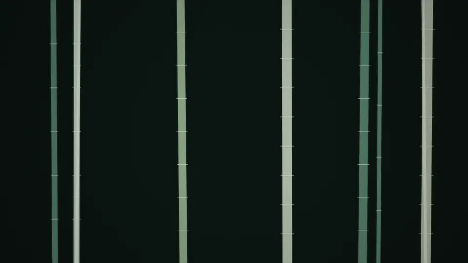
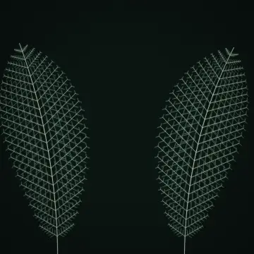
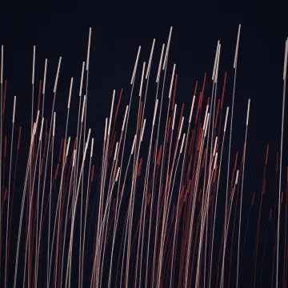

Interactive Art · 만지는 만큼 움직이는 화면
스크롤하는 만큼 그림이 움직입니다
전시장에서 사람이 지나가면 반응하고, 웹에서는 스크롤한 만큼 움직입니다. 같은 원리로 센서·데이터에도 붙습니다.
Interactive Art
영상이 아닙니다. 코드로 그린 화면을 손가락이 미는 만큼 골라 그립니다.

竹林 · 대숲스크롤해 보세요
-

葉脈 · 잎맥선으로만 그린 잎
-

蘆葦 · 갈대바람에 눕는 결
-
花雪 · 꽃눈떨어지는 꽃잎
규격은 정해져 있지 않습니다. 32:9 외벽이든 1:6 기둥이든 그 크기로 나옵니다.